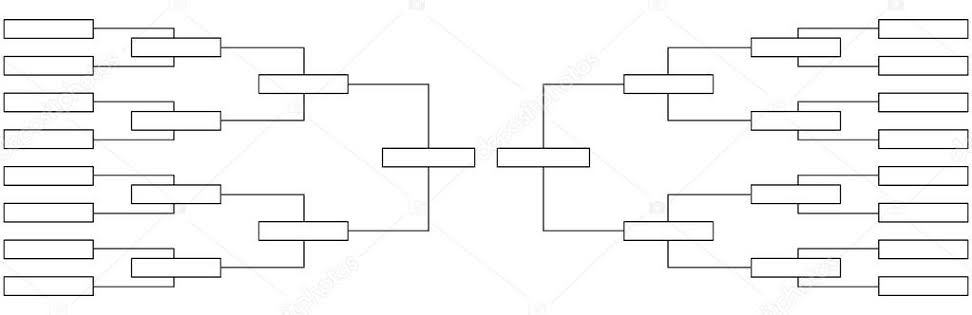
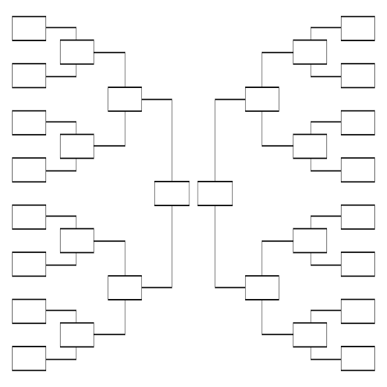
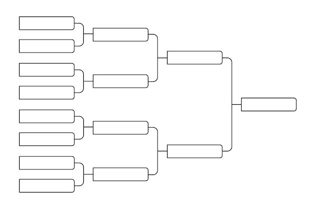
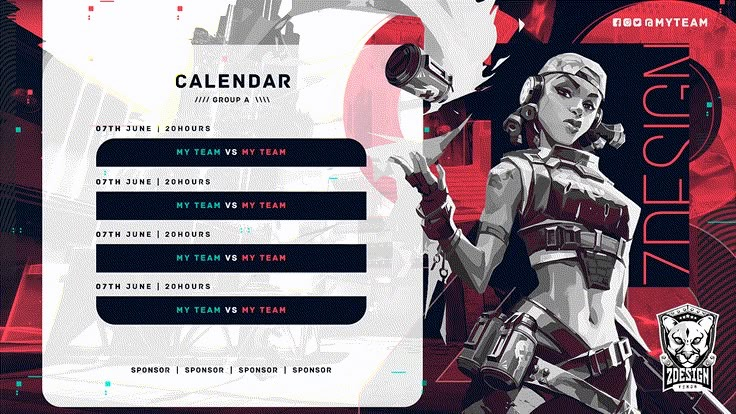
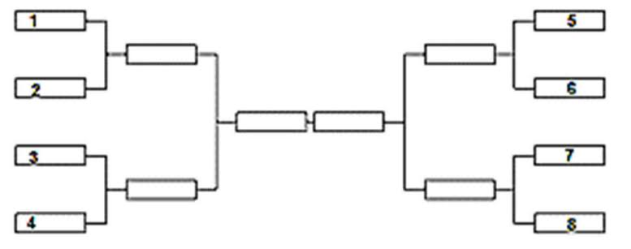
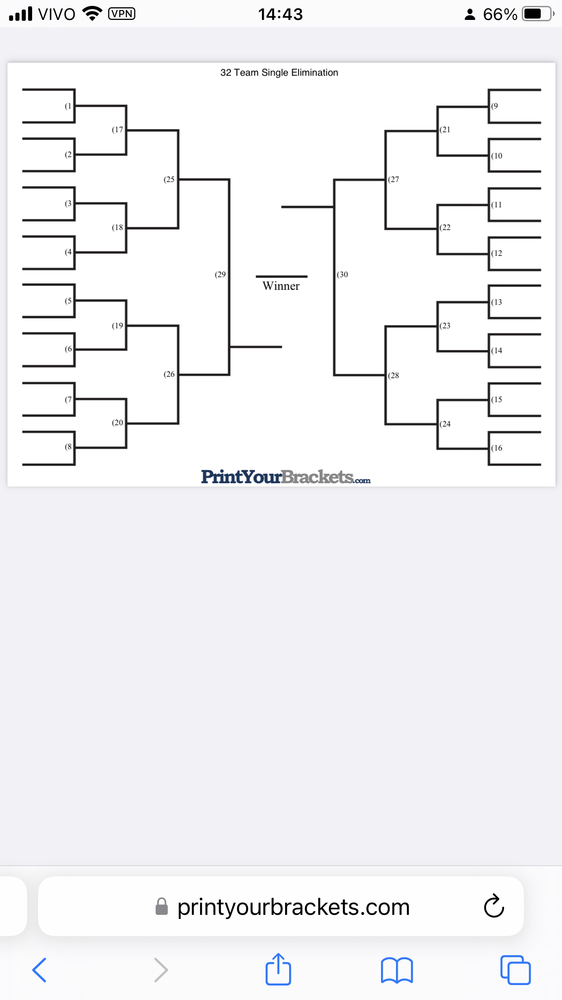
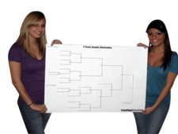
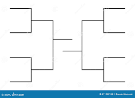

Quanto aos Campeonatos tanto internos, isto é entre membros do [BK] Clan, quanto externos, entre outros Clans e até desde os Nacionais desses 04 (quatro) Games/Jogos que o [BK] Clan decidiu representar com seus membros e até mesmo os Internacionais (nos EUA/USA, Europa, Ásia e etc, todas as notícias envolvendo o [BK] Clan e seus membros, seja com vitória ou derrotas acachapantes serão postadas aqui.
Temos um campeonato interno bem simples, desde o básico e indo até mesmo até um de medianidade-médio complexa com até 32 Jogadores (Simulado de uma Copa do Mundo), mas antes com uma 1ª Fase classíficatória de apenas 2 partidas para entrar nas disputas/campeonatos Internos, mas no [BK] coisas simples, nada se comparado com Campeonatos Internacionais nos EUA/USA como Copas do Mundo entre Confederações, Uniões ou Federações de outros Clans (isto é fan-clubes que nem mesmo por enquanto e por hora o [BK] - Byetaklan não está afiliado mas que no futuro em breve estará, e, seja por não domínio de técnica ou prática e nem roupagem do nome do Clan ou fama que impõe respeito com de bons a excelentes jogadores, coisa que o Clan ainda não tem, e nem mesmo se tivesse os tops na área, o que a atual estrutura deste clan, que ainda está começando por hora não permitiria no atual meio também.
Os Juízes/Árbitros de cada jogo/match/partida jogado e realizado, desde disputas simples e básicas corriqueiras entre membros internos e dentro do [BK] - Byetklan, serão feitos com os membros escolhidos para cada partida, isto é, Disputante A vs. Disputante B que em ponto em acordo comum escolhem como Árbitro um terceiro jogador do clan que participa como Observador no Jogo e grava a partida ate mesmo com Screen Recorder (Gravador de Tela) se o AoE ou outro jogo não tiver o recurso nativo de gravação na partida e então analisa depois, se os jogadores não concordarem ou tiver ums disputa de fatos e versões na partida, o jogo se não puder ter sido gravado vai a depoimento em um Chat privado com a Diretoria com o tal árbitro sobre os procedimentos para decisão do vencedor.
Não há problema, pelo menos nos Campeonatos Internos, disputas serem decididas por W.O (="Winner Over"), tanto por desistências quanto por contra-tempos, problemas no dia da partida como inoperância da placa de rede ou na Internet com aquelas lags terríveis e pings horríveis...
Pode-se também escolher o local (desde em casa no Computador ou site de multiplayer na Internet ou no mIRC) aonde ocorrerá a partida, entre os disputantes, é preferível o padrão ja imposto até mesmo pela indústria Gamer quanto Internet e seus sites servidores e hosts para se jogar o Multiplayer, como o mIRC (canais de jogadores AoE/Agers, como Civilizations/Civers, Team Fortress/TF, Counter Strike etc), ou Voobly, Gameranger, Hamachi e etc similares e afins.
O [BK] Byetaklan não autoriza nenhuma LAN House por enquanto a representar o Clan e realizar tais jogadas entre os jogadores membros ou por fora, salvo autorização expressa e no papel feita do membro ou indivíduo requisitante para com a Diretoria e/ou Fundadores do [BK] Clan.
Também não estão autorizadas apostas sumariamente entre os membros internos e sem autorização da Diretoria e com os fundadores do Clan, por enquanto, e nem através dos bet sites como betting ou os bets e nem nos sites de bet, tão já muito disseminados pelo país, no Brasil. Caso o membro integrante do [BK] Clan queira fazê-lo seriamente e com outros membros internos quanto com outro jogador externo, ficará sujeito à regulamentação do referido site bet de apostas online.
No Campeonato Interno Anual do [BK] Clan, não será admitido oficialmente o bet, caso ocorra bet extra-oficialmente e por fora do [BK] Clan entre acompanhantes de observadores na partida do campeonatonão será nem admitido e nem computado e o [BK] Clan não deixará influenciar na partida, se houver algum membro interno disputante manifestando a respeito e partir para ignorância durante o campeonato sobre bets, estará automaticamente desclasificado, mesmo que ganhe a partida e dependendo da gravidade da situação após apuração da Diretoria que regulamenta e mantêm o Clan, até mesmo expulso do [BK] Clan.
Já para a 1ª Fase classificatória do Campeonato Interno (anual, isto é por ano), reúne-se por votação interna uma Comissão de Árbitros, com os jogadores mais experientes, não precisa ser o melhor nem o top, ou se não puder ou não tiver quem, ficaria sendo a Diretoria com os fundadores do Clan como árbitro desde o início do campeonato interno até o seu fim.
Com o tempo, e nem mesmo os fundadores sabem, até onde o clan poderá chegar com tantos investimentos...
Eis os estilos de campeonatos internos, apresentados e possíveis para a estrutura do [BK] Clan...:








It lacks images, but at least it has style. And it has links, even if they don't go anywhere…
There should be more here, but I don't know what yet.
Made 8 October 2024 and by [BK] ByetaKlan webmasters